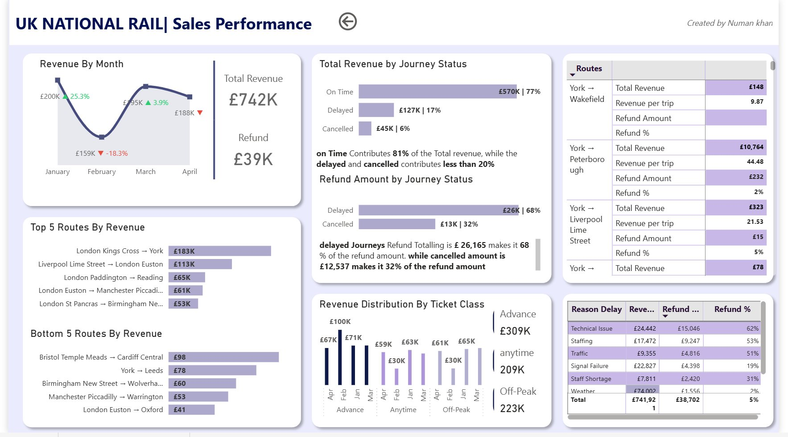
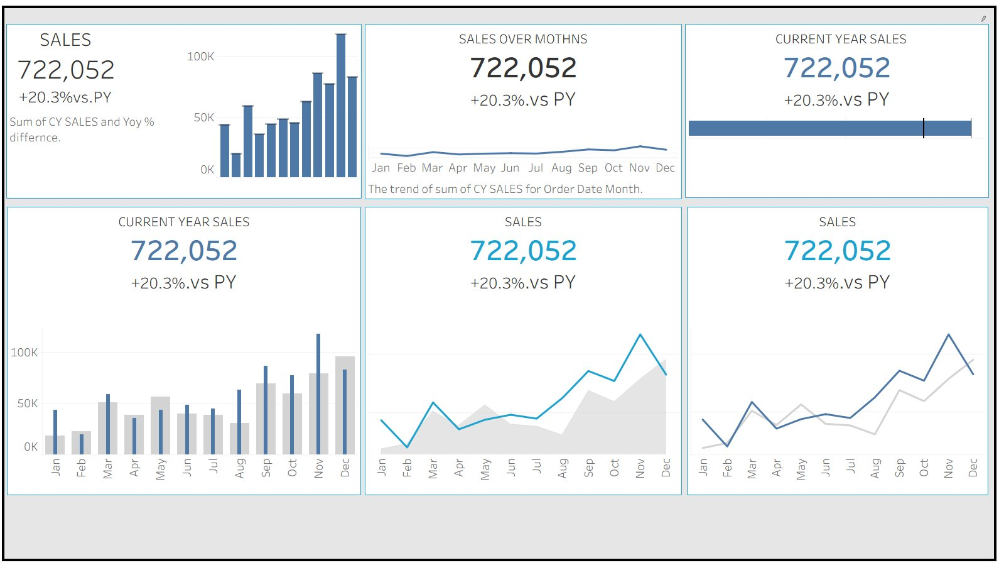

Data Analyst with hands-on logistics experience, transforming complex datasets into executive dashboards and actionable business intelligence using Excel, Power BI, Tableau, SQL & Python.
I'm a Results-driven Data Analyst with 2+ years of experience transforming complex datasets into actionable insights across e-commerce, sales, and logistics. Currently gaining hands-on operations experience at iMile Delivery — one of Riyadh's leading reverse logistics centres.
I bring a unique blend of analytical and operational expertise, designing executive dashboards and tracking sales performance using Excel, SQL, Power BI, and Tableau. Google-certified with a consistent track record of delivering measurable business impact.
My background spans e-commerce analytics, digital marketing, and business development, giving me a 360° view of how data drives decisions at every level of an organisation.
A track record of delivering data-driven results across logistics, e-commerce, and digital marketing.
Real-world analytics projects spanning BI dashboards, Python EDA, SQL exploration, and Google-certified case studies.


A comprehensive overview of my experience, skills, certifications, and education — all in one document. Updated April 2026.
I'm actively open to Data Analyst, BI Analyst, or Analytics Engineer roles. Let's connect and see how I can bring value to your team.